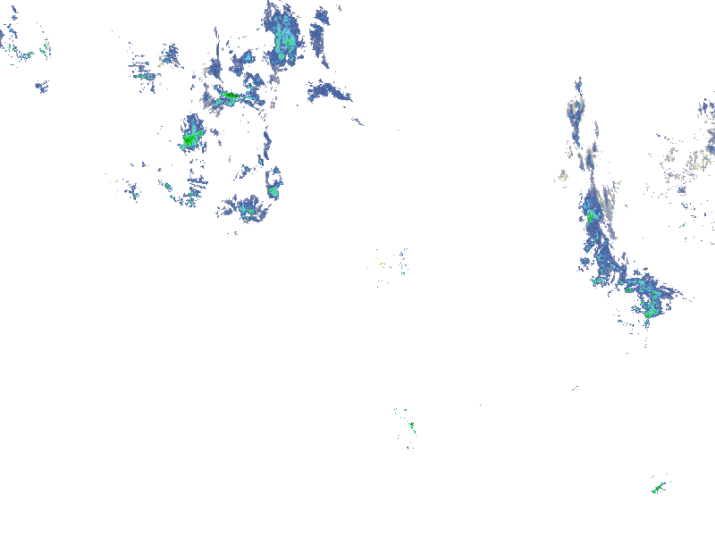
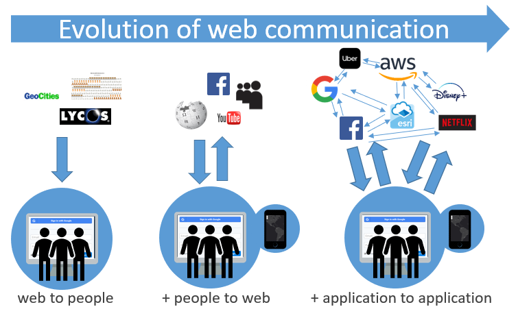

Lesson 3
Web GIS Concepts, Part 2
Table of Contents
Terms: HTTP, REST, endpoint, application programming interface, interoperability
First contact: getting a response from a web service
You have experience with typing a URL into a web browser to visit a webpage, but what about a web service? Let’s go back to a URL that was used in the previous lesson’s introduction.
First, note that in these examples we will interact with web services using a particular HTTP method involving URLs, because URLs are easy to use in a beginner’s guide like the one you are reading. HTTP (Hypertext Transfer Protocol) is the protocol that applicatons use to communicate things like webapages and images over the web, and HTTP has several methods for doing so. The one we will use with these example URLs is called GET, which, as the name suggests, is a method for clients to request and get a resource from a web server. Furthermore, these web services are examples of RESTful services. REST (representational state transfer) web services allow clients to send input parameters via a URL, again making them easy to use in a beginner’s tutorial.
The other methods are outside the scope of this course, but if you learn more about web services, you will encounter some that work quite differently from these simple examples.
Census API
https://api.census.gov/data/2019/acs/acs5?get=B01003_001E&for=state:22
The text in the URL above specifies what information we are requesting from the server. This endpoint, or URL for a web service, points to a U.S. Census Bureau application that returns census data based on your request parameters. Note these two parts in the URL:
get=B01003_001E
for=state:22
The value B01003_001E is the code for total population and 22 is the code for Louisiana. So this endpoint triggers the Census Bureau application to dig into its data sources to find that information. Once found, the application responds in text format, sending the following output across the Internet to your web browser.
[["B01003_001E","state"],
["4664362","22"]]
Google Maps Geocoding API
Let’s take a look at another example using one of Google’s web services. This is a URL for Google’s geocoding service. It turns street addresses into latitude and longitude coordinates. Note the use of the letters “api” in this and the previous example, referring to an application programming interface. API is a common term in the world of web GIS, web services, and programming in general. Web services can be considered a type of API, as they are an interface for applications to talk to one another.
You can pick out the address at the end of the URL, where it is assigned to a variable named address.
The response looks like a lot of code, from which we can pick out the part that gives the latitude and longitude.
...
"formatted_address" : "5151 Highland Rd, Baton Rouge, LA 70808, USA",
"geometry" : {
"location" : {
"lat" : 30.3964204,
"lng" : -91.16252729999999
},
...
Yet another example URL for the geocoding service does a reverse lookup and gives us an address based on the latitude and longitude we put in the URL:
At the end of the URL you can see the variable “latlng” and it is equal to “30,-90”, a simple latitude and longitude pair. In the result you can find the full address that the API found for those coordinates.
...
"formatted_address" : "7501 Terminal Rd, New Orleans, LA 70126, USA",
...
NOAA web service
Here is one last example of a web service, showing current weather radar. The resource this long URL returns is an image.

Figure 1. Response from a NOAA weather radar web service showing current precipitation at the time the image was captured. The response is an image covering the continental U.S., demonstrating that web services can return more types of information than only text.
You can see, though, that the image is of limited use by itself; it is intended to be consumed by an application that then does something with it, like overlay it onto a national map. For example, ArcGIS Online can display map data from a web service.

Figure 1. The ArcGIS Online Map Viewer is an application capable of displaying the response of a web map service. The radar imagery shown in the viewer comes from a NOAA web service, while the gray map in the background comes from an Esri web service.
Discussion
If a web service is not a website, then what are we seeing when we enter these URLs? The response we see is the output of a program. Recall from earlier that a service is a program dedicated to a specific task. So, when we contact a web service via its endpoint URL, we are running a program. In the geocoding example above, Google hosts a program that converts coordinates into addresses and vice versa, but instead of installing this program on your computer, you use it via the web service by sending your input to an endpoint URL.
Meant for machines, not people
Why aren’t the results easier to read, and why are they formatted like code? Actually, we are not using the web services correctly when we try to view them in the browser. They are not meant for that. Web service responses are not really meant to be seen, or “consumed”, by humans at all, at least not in their raw form. Instead, web services are meant to be used by other applications. They are a way for applications to communicate with one another.
If a human wants to see an address location on a map, they can just put the address into a search engine and see a map in the results. No one is going to fool with a web service for that. Behind the scenes, however, there are applications using services to work together to generate those results. Google Search, which is an application, is using Google’s geocoding service, sending your input to the service, receiving the response, and nicely displaying it on a map.

Figure 1. Google search results for the address “5151 Highland Rd, Baton Rouge, LA 70808, USA”, showing the address location as a point on a map. Google Search uses the Google Maps Geocoding API behind the scenes to translate the address into latitude and longitude coordinates (30.3964204, -91.1625273).
The significance here is that, since web services can transfer information between applications, they can enable automation: applications do not always need a human operator, or a human manually copying data from system to system. For something like weather that changes often, it would be hard to imagine a weather app that required the developer to manually go to a government website to download new radar data every 15 minutes, then upload it into their own application. With web services, they don’t have to. The dataset is provided as a utility that is always on and connected (like electricity), streaming the most up-to-date information into their app’s logic or onto the screen for users.
Where the web was once a place where information was exchanged between people and applications, it is increasingly a system for connecting applications to each other through web services. The ability of applications to exchange information with other computer systems is known as interoperability.

Figure 1. On the early web, information was broadcasted to audiences by the relatively small number of content creators who could make websites. Platforms evolved to allow the audience to contribute content, and more people became both consumers and producers of information (often called Web 2.0). Today, the web is characterized by increasingly connected platforms, transmitting information between applications.
Reusability
Google’s geocoding API is not only used by Google; they make it available for use by third parties. For example, imagine you are developing a ride sharing mobile app and it needs to display a street address for rider locations. The app takes the phone’s current GPS coordinates and sends them to maps.googleapis.com, which matches the coordinates with an address. Then the app reads the response from the API and extracts the address, and then finally the app prints the address on screen to the user.
That is much easier than trying to take on the immense task of developing a geocoding application yourself, allowing you to focus on your ride sharing app (earlier in its development, Uber used the Google Maps APIs).
Another implication of web services is that data can be opened up to use in other applications, rather than being kept offline or only used through the provider’s website. Google could keep its geocoding service closed, available only through Google websites, but instead they operate it as a service that third parties can connect to.
NOAA, for example, makes its weather radar imagery and other data available as a web service. Anyone can make a website or application that uses this data. That is much more useful than if NOAA forced users to view its own website to see the data (which until recently was quite outdated).
Summary
Web services are a core part of Web GIS. They allow geographic information (map data) to be spread and re-used in websites and applications for research, commercial, or administrative use. They are part of a wider trend in computing where applications communicate with other applications through services. The service-oriented architecture philosophy has extended to the Internet, and web services are the result. Maps, a form of information that has existed for thousands of years, are now also following this trend and being turned into web services to be consumed not just by humans but applications as well. It is now easier than ever to create online maps with diverse datasets from across the Internet using web services.
TopBack to Lessons